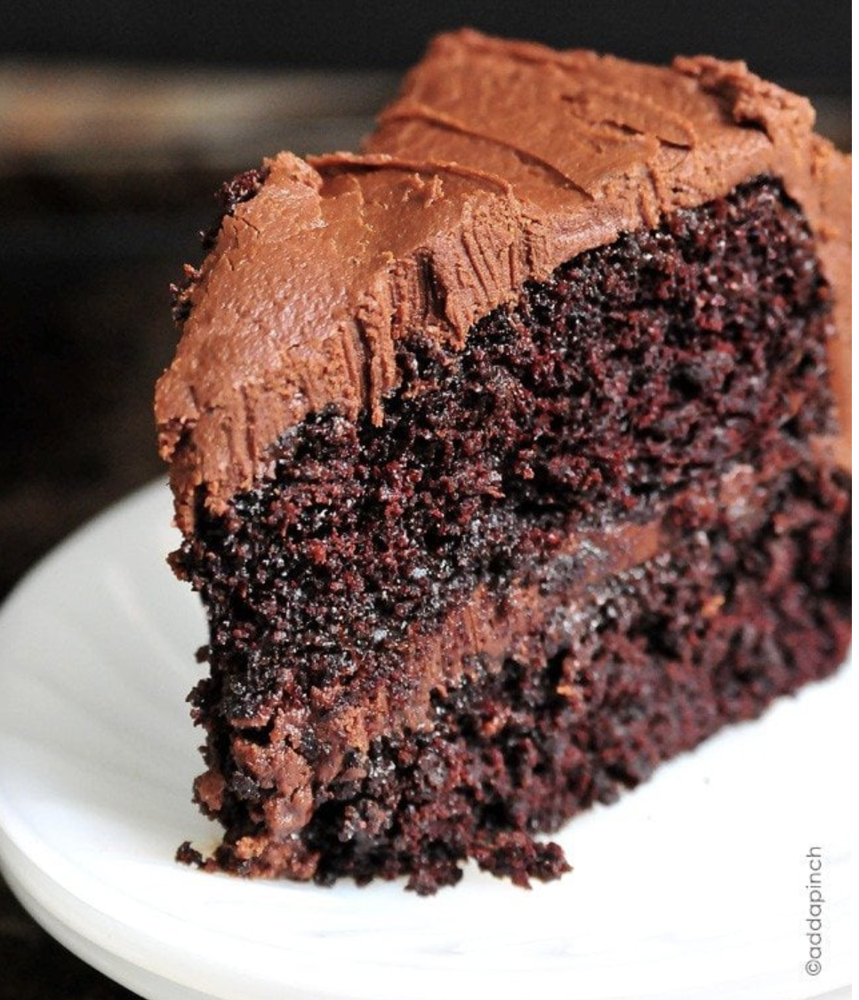

Smoothie

Description
Supercharge your morning with the best green smoothie recipe using sweet mango, creamy banana, and nutrient-packed spinach. Green smoothies come together in just 5 minutes to give you a delicious, energizing, and nourishing option to start the day.
Ingredients
- 1 cup spinach
- 1 cup water
- ½ cup pineapple frozen
- ½ cup mango frozen
- 1 banana
Steps
- Measure: Tightly pack spinach in a measuring cup.
- Add: Put spinach to blender with water. Blend together until all chunks are gone. (Should resemble green water when blended well).
- Toss: Pineapple, mango and banana to blender. I like to use frozen pineapple and mangos to chill the smoothie down and save time cutting and prepping. It’s a win-win!
- Blend: It all together until smooth and creamy. Depending on your blender, this could take as little as 30 seconds or as long as 2 minutes.
- Pour: Into a glass and serve immediately.
Home